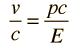

Velocity in Terms of pc
A useful application of the quantity pc is in the calculation of the velocity as a fraction of c.
|  | and as |
with the limiting case applying for the momentum of a photon.
This relationship can be demonstrated as a reorganization Einstein energy relationship.
| Usefulness of quantity pc |
General relativity ideas
| HyperPhysics***** Relativity | R Nave |